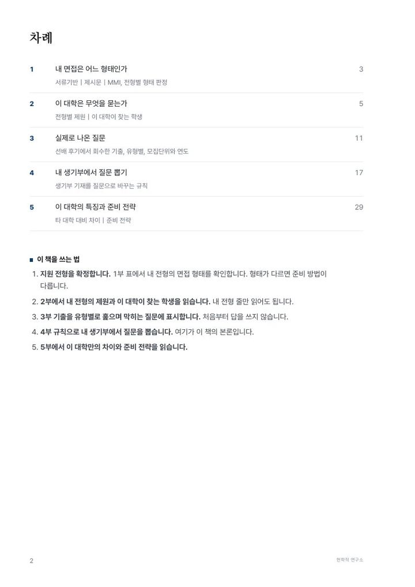
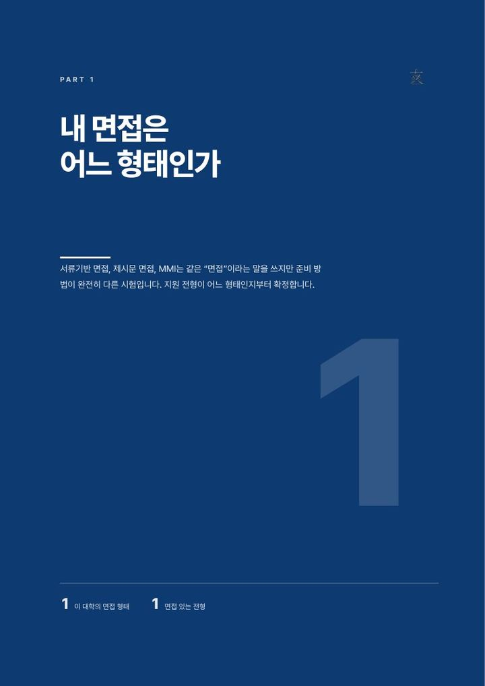
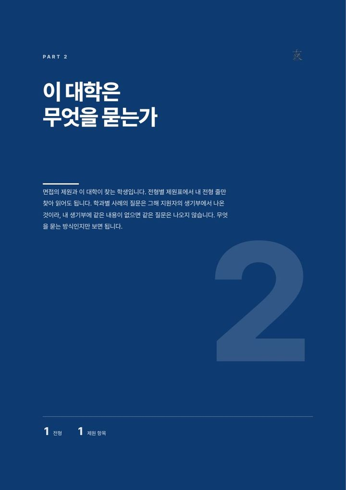
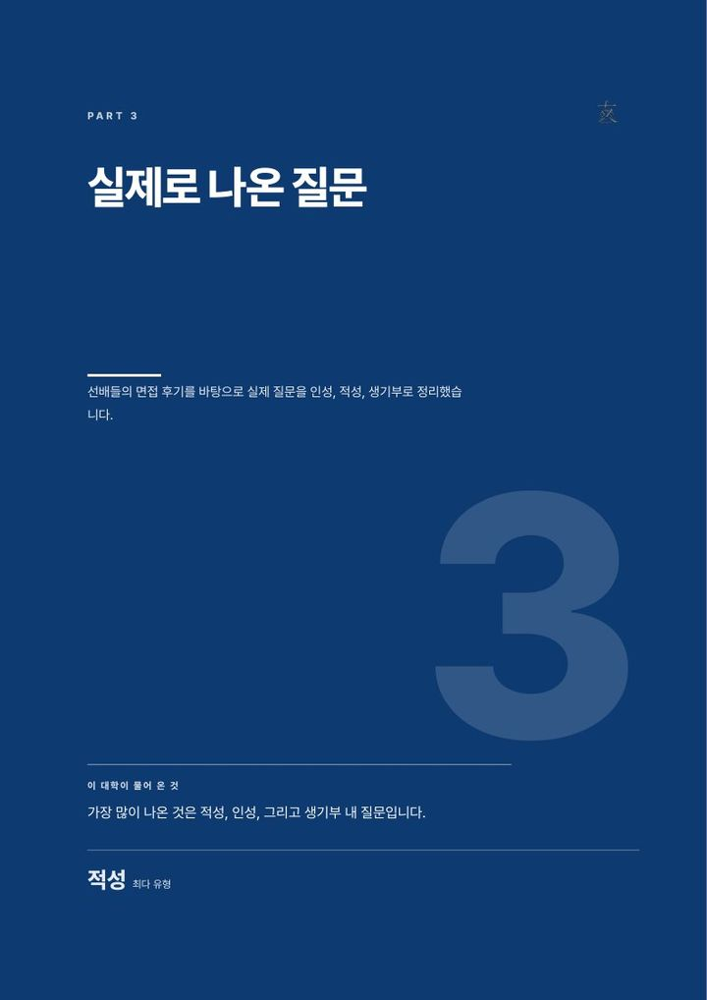
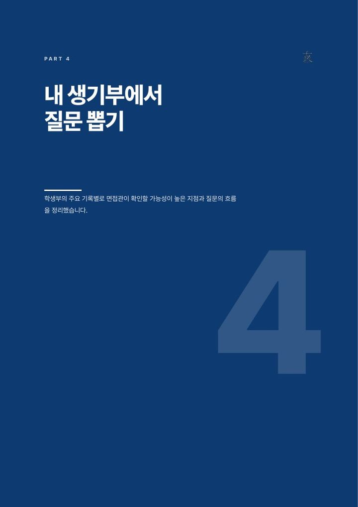
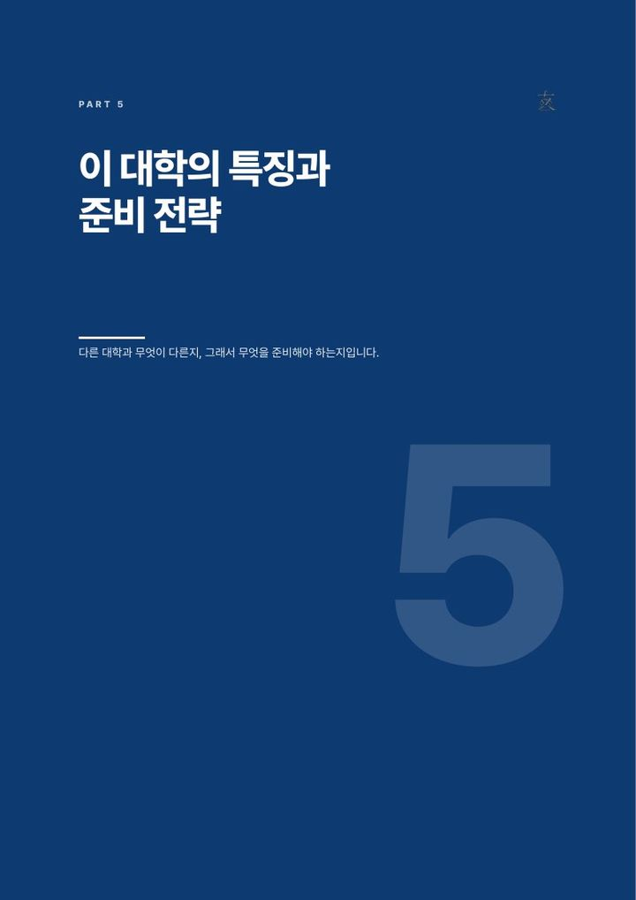
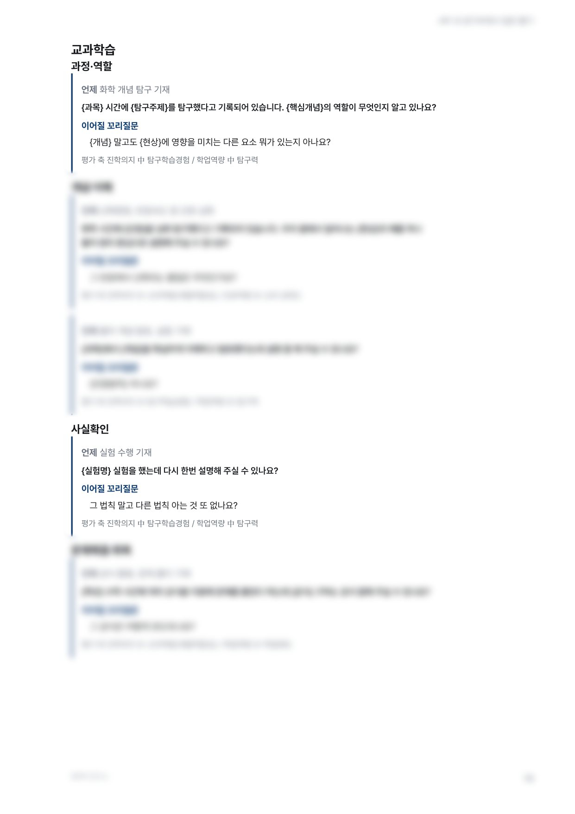
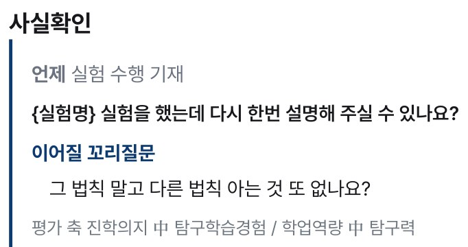

대학별 생기부 면접 가이드북
면접관의 다음 질문,
이미 내 생기부 안에
31개 대학 31권. 선배 후기 2017년부터 2026년까지의 관측과 2027학년도 공식 요강을 한 사람이 같은 기준으로 다시 짠 편집본.
대학별 면접 가이드북 2027은 서류기반 면접(생기부 면접) 준비서로 31개 대학 31권, 다섯 부 구성입니다. 면접 기출문제와 생기부 예상 질문 규칙을 담았고 권당 33,000원.


- 31개 대학2027 대비판 판매 중
- 1,178면31권 본문 합계
- 3,065건수록된 실제 질문
- 5부읽는 순서 그대로 준비 순서
- 2017~26선배 후기 관측 기간
- 2027요강공식 모집요강 대조
시작하기 전에
같은 “면접”이라는 이름, 준비 방법이 다른 세 시험
대입 면접 자료 대부분이 면접을 한 덩어리로 다룹니다. 내 생활기록부가 문제지인 시험과 면접장에서 받은 글이 문제지인 시험은 준비할 것이 처음부터 다른데도 그렇습니다.
- 형태 1
서류기반
내 생활기록부가 문제지. 면접관이 기재 내용을 읽고 그 자리에서 묻는 시험입니다. 이 책의 3부와 4부가 이 형태를 위한 것.
- 형태 2
제시문
면접장에서 받은 글과 문제를 두고 묻는 시험. 생활기록부는 보지 않고, 논술에 가까워 준비 방법이 완전히 다릅니다.
- 형태 3
MMI
여러 방을 차례로 돌며 방마다 다른 상황 과제에 답하는 형태. 의약학 계열에서 쓰며 생활기록부 면접과는 다른 시험.
지원 전형이 어느 형태인지 모른 채 시작한 준비는 방향부터 어긋납니다. 이 책의 첫 면이 형태 판정인 이유.
이 책이 맞는 사람
서류기반 면접을 앞둔 학생, 그 순서를 잡아 주려는 사람
- 학생
학생부종합전형 지원자
면접이 서류기반인 전형에 지원하는 학생. 3부에서 막히는 유형을 찾고 4부 규칙으로 내 질문지를 만드는 사람.
- 학부모
준비 순서를 잡아 주려는 학부모
1부와 2부만 읽어도 자녀가 어느 시험을 준비하는지, 대학이 무엇을 본다고 밝혔는지가 잡힙니다.
- 학교, 학원
여러 학생을 같은 기준으로 지도하는 곳
31권이 같은 다섯 부 구조라 학생이 바뀌어도 지도 순서가 같습니다. 전권 열람과 좌석 단위는 문의 이메일로.
- 원칙 1
지어낸 질문 없음
모든 질문은 선배 후기에서 회수한 실제 질문. 질문 끝에 모집단위와 연도를 적습니다.
- 원칙 2
공식 요강 원문 대조
2027학년도 모집요강과 대학 공식 진술을 원문으로 인용하고 근거를 표기.
- 원칙 3
규칙은 역추적
실제로 나온 질문에서 기재와 질문의 관계를 되짚어 규칙으로 만듭니다. 추정 문항 0건.
- 원칙 4
판을 밝힘
2027 대비판 VOL 표기. 권마다 면수와 질문 수를 공개.
이 책이 하는 일
다섯 부, 읽는 순서 그대로 준비 순서
표지의 차례가 곧 준비 순서입니다. 앞의 세 부는 4부를 내 것으로 만들기 위한 준비이고 4부가 본론, 5부는 대학별 차이의 반영. 31권 전권이 같은 다섯 부로 짜여 있습니다.
- 1부
내 면접은 어느 형태인가
지원 전형 확정. 1부 표에서 내 전형의 면접 형태 확인. 형태가 다르면 준비 방법이 다릅니다.
서류기반, 제시문, MMI 판정 - 2부
이 대학은 무엇을 묻는가
내 전형의 제원과 이 대학이 찾는 학생 읽기. 내 전형 줄만 읽어도 충분한 표.
전형별 제원, 공식 인재상 - 3부
실제로 나온 질문
기출을 유형별로 훑으며 막히는 질문에 표시. 처음부터 답을 쓰지 않는 것이 요령.
선배 후기에서 회수한 기출 - 4부, 본론
내 생기부에서 질문 뽑기
규칙으로 내 생기부에서 질문 뽑기. 여기가 이 책의 본론.
기재를 질문으로 바꾸는 규칙 - 5부
이 대학의 특징과 준비 전략
이 대학만의 차이와 거기서 나온 준비 전략 읽기.
타 대학 대비 차이, 전략

차례와 쓰는 법
1부 들어가는 면
2부 들어가는 면
3부 들어가는 면
4부 들어가는 면
5부 들어가는 면
판매본 지면 그대로. 가천대학교 판 차례와 각 부 들어가는 면. 본문 지면은 대학별 상세 면의 미리보기에.
내 면접은 어느 형태인가
서류기반 | 제시문 | MMI, 전형별 형태 판정
- 1
세 형태 중 서류기반. 정의와 이 대학에 있음 표시
- 2
전형별 형태 판정표. 가천바람개비전형은 서류확인형
이 부에 들어 있는 것
- 세 형태의 정의. 서류기반, 제시문, MMI
- 이 대학에 있는 형태와 없는 형태
- 전형과 모집단위별 형태 판정표. 서류확인형, 혼합형, 제시문형, 인적성형
- 면접이 있는 전형의 목록
왜 첫 자리인가
형태가 다르면 준비 방법이 통째로 다릅니다. 판정을 먼저 끝내면 준비 자원이 한 형태에 모입니다.
표에서 내 전형 한 줄만 찾으면 되는 구조. 전형 이름이 같아도 모집단위에 따라 형태가 갈리는 대학이 있어서 모집단위까지 적었습니다.
| 전형과 모집단위 | 면접 형태 판정 |
|---|---|
| 수시 지역균형전형 (의과대학 제외) | 서류확인형 |
| 수시 일반전형, 사범대학 전 모집단위 | 혼합형 (제시문 + 교직적성, 인성) |
| 수시 지역균형전형, 의과대학 | 혼합형 |
이 대학은 무엇을 묻는가
전형별 제원 | 이 대학이 찾는 학생
- 1
확인 질문에서 역추론한 학과별 초점. 질문 5건 이상 확인된 36개 학과 수록
- 2
간호학과 82건. 확인하는 것과 실제 질문 두 건
이 부에 들어 있는 것
- 전형별 공식 제원 9항목. 전형유형, 면접 실시, 반영비율, 면접시간, 면접형태, 대면여부, 블라인드, 제시문 유무, 확인된 건수
- 대학 공식 인재상 원문
- 면접 관점의 공식 진술 원문과 면접 문항 설계 원칙
- 항목마다 공식 근거 표기
왜 필요한가
대학이 스스로 밝힌 평가 기준이 답변의 방향입니다. 인터넷 후기의 단편 대신 요강과 공식 진술을 원문으로 읽는 자리.
학과별 사례의 질문은 그해 지원자의 생기부에서 나온 것이라 무엇을 묻는 방식인지만 보면 됩니다.
“화법의 유창함보다, 질문의 의도를 정확히 파악하여 그 핵심에 맞게 답변할 수 있는지를 중점적으로 봅니다.”
| 반영비율 | 1단계 서류 100%(4배수), 2단계 1단계 50% + 면접 50% |
|---|---|
| 면접형태 | 지원자가 제출한 서류 기반 확인형 |
| 제시문 | 사용하지 않음 (기록 기반) |
실제로 나온 질문
선배 후기에서 회수한 기출, 유형별, 모집단위와 연도
- 1
유형 이름과 질문. 끝의 작은 글씨가 모집단위와 연도
- 2
전공지식확인 91건, 17.9%. 첫 두 질문
- 3
한 줄 질문. 전자공학과, 2021년
이 부에 들어 있는 것
- 선배들의 면접 후기에서 회수한 실제 질문. 지어낸 문장 없음
- 유형별 분류. 지원동기와 대학이해, 진로, 탐구와 세특 심화, 전공지식 확인, 독서, 공동체와 인성, 자기이해와 성장, 학업과 교과, 상황과 가치판단, 시사, 자기소개, 마무리, 꼬리질문
- 질문마다 그 질문이 나온 모집단위와 연도
- 이 대학의 최다 유형 표시
어떻게 쓰나
유형의 분포가 대학마다 다릅니다. 처음부터 답을 쓰지 않고 유형별로 훑으며 막히는 질문에 표시하는 것이 3부의 쓰임.
어느 유형에서 막히는지가 4부에서 뽑을 질문의 우선순위가 됩니다.
- “2학년 때 반장을 했는데, 활동하면서 어려운 점은 없었나요?”간호학과, 2022년
- “그런 배려가 우리 학과에 어떻게 영향을 줄 수 있을까요?”설비소방공학과, 2024년
- “2학년 때 쓰러진 친구를 응급처치했다고 했는데, 어떻게 도왔나요?”반도체물리학과, 2025년
이 책의 본론
내 생기부에서 질문 뽑기
생기부 기재를 질문으로 바꾸는 규칙
- 1
영역 이름과 규칙 한 건. 전교 회장, 부회장 기재 때의 질문 틀, 꼬리질문, 평가 축
- 2
영재학급, 심화과정 기재 때의 규칙
이 부에 들어 있는 것
- 생기부 영역별 전환 규칙. 교과 세특, 창체 자율, 동아리, 진로활동, 봉사, 행동특성 및 종합의견, 독서, 성적 추이, 출결, 전형 공통
- 규칙마다 네 칸. 언제(어떤 기재가 있을 때), 질문 틀, 이어질 꼬리질문, 평가 축
- 실제로 나온 질문에서 되짚어 만든 규칙. 대학마다 다름
왜 본론인가
3부의 기출은 그해 지원자의 생기부에서 나온 질문입니다. 내 생기부에 같은 기재가 없으면 같은 질문은 나오지 않습니다.
4부의 규칙은 이 대학이 생활기록부의 어떤 기재를 보고 어떤 질문을 만들었는지를 실제 질문에서 되짚은 것. 내 생기부를 펴 놓고 해당되는 규칙마다 질문을 만들면 그 목록이 내 예상 질문지.

- 1
영역 이름과 규칙 한 건. 언제, 질문 틀, 꼬리질문, 평가 축
- 2
실험 기재가 있을 때의 규칙. 4부 표본으로 든 그 규칙

선명한 2칸만 판매본 그대로. 흐린 부분은 구매 뒤 보안 리더에서 전부 열립니다.
- 01
내 생활기록부를 펴 놓기.
- 02
영역별로 해당되는 규칙 찾기.
- 03
질문 틀의 빈 자리에 내 기재를 채워 질문 만들기.
- 04
꼬리질문까지 답 준비. 그 목록이 내 예상 질문지.
이 대학의 특징과 준비 전략
타 대학 대비 차이 | 준비 전략
- 1
절 제목
- 2
40초 답변 훈련. 근거가 붙은 행동 한 줄
- 3
꼬리질문 2단 대비. 확인된 꼬리 15건에서 나온 규칙
이 부에 들어 있는 것
- 2027학년도 공식 대비 범위
- 전체 대학 평균 대비 이 대학의 차이 6지표. 제시문 질문 비중, 전공지식 확인과 탐구 심화 합계, 꼬리질문 비율, 면접시간 분포, 지원동기 비중, 공동체 질문 비중 대 인성 배점
- 압박도 등 후기 참고 지표, 후기 원문 인용
- 차이에서 나온 준비 전략 목록
왜 마지막인가
같은 서류기반이라도 강조점이 다릅니다. 숫자로 잰 차이가 준비 순서를 정합니다.
꼬리질문 비율이 전체 평균의 1.5배인 대학은 첫 답보다 두 번째 답이 승부처. 10분 면접이 표준인 대학은 답변 한 건을 40초 안팎으로 압축하는 연습이 먼저.
- 꼬리질문 비율6.7%전체 4.5%+2.2%p
전체 평균의 1.5배. 확인된 꼬리질문 15건 중 11건이 개념 심화형.
- 면접시간 10분 계열63.2%전체 41.7%+21.5%p
10분이 사실상 표준. 답변 1건당 40초 안팎으로 압축.
- 제시문 질문 비중0.0%전체 2.3%-2.3%p
제시문 확인이 단 1건도 없음. 전 전형이 순수 서류확인형.
현재 판매 목록, 가나다 순
지원 대학부터 고르기
31개 대학 31권. 표지를 누르면 그 대학의 지면 미리보기와 형태 판정표가 있는 상세 면으로 갑니다.
 가천대학교34면, 질문 107건
가천대학교34면, 질문 107건
 가톨릭대학교31면, 질문 97건
가톨릭대학교31면, 질문 97건
 건국대학교(서울)33면, 질문 93건
건국대학교(서울)33면, 질문 93건
 경기대학교31면, 질문 115건
경희대학교37면, 질문 119건
경기대학교31면, 질문 115건
경희대학교37면, 질문 119건
 광운대학교96면, 질문 111건
광운대학교96면, 질문 111건
 국민대학교32면, 질문 121건
국민대학교32면, 질문 121건
 단국대학교(죽전)32면, 질문 18건
단국대학교(죽전)32면, 질문 18건
 덕성여자대학교20면, 질문 41건
덕성여자대학교20면, 질문 41건
 동국대학교36면, 질문 143건
동국대학교36면, 질문 143건
 동덕여자대학교20면, 질문 42건
동덕여자대학교20면, 질문 42건
 동아대학교36면, 질문 136건
동아대학교36면, 질문 136건
 명지대학교34면, 질문 131건
부산대학교35면, 질문 103건
명지대학교34면, 질문 131건
부산대학교35면, 질문 103건
 삼육대학교18면, 질문 12건
삼육대학교18면, 질문 12건
 서울과학기술대학교30면, 질문 107건
서울대학교38면, 질문 106건
서울과학기술대학교30면, 질문 107건
서울대학교38면, 질문 106건
 서울시립대학교42면, 질문 111건
서울시립대학교42면, 질문 111건
 서울여자대학교59면, 질문 55건
서울여자대학교59면, 질문 55건
 성신여자대학교35면, 질문 111건
성신여자대학교35면, 질문 111건
 세종대학교32면, 질문 101건
세종대학교32면, 질문 101건
 숙명여자대학교30면, 질문 92건
숙명여자대학교30면, 질문 92건
 숭실대학교31면, 질문 81건
숭실대학교31면, 질문 81건
 아주대학교111면, 질문 153건
아주대학교111면, 질문 153건
 울산대학교35면, 질문 132건
이화여자대학교36면, 질문 119건
울산대학교35면, 질문 132건
이화여자대학교36면, 질문 119건
 인천대학교43면, 질문 133건
인천대학교43면, 질문 133건
 인하대학교40면, 질문 124건
중앙대학교38면, 질문 102건
인하대학교40면, 질문 124건
중앙대학교38면, 질문 102건
 한국외국어대학교36면, 질문 138건
한국외국어대학교36면, 질문 138건
 한양대학교(ERICA)17면, 질문 11건
한양대학교(ERICA)17면, 질문 11건
준비 순서의 차이
예상 질문 100개를 외우는 준비와 내 질문을 뽑는 준비
흔한 준비는 남의 기출에서 시작해 남의 답을 외웁니다. 이 책의 순서는 내 전형의 형태에서 시작해 내 생기부에서 끝납니다.
| 단계 | 흔한 준비 | 이 책의 순서 |
|---|---|---|
| 시작 | 예상 질문 목록을 구해 암기 | 내 전형의 면접 형태 판정 (1부) |
| 기준 | 인터넷 후기의 단편 | 2027 공식 요강과 대학 공식 진술 원문 (2부) |
| 기출 | 출처 없는 질문 모음 | 모집단위와 연도가 붙은 실제 질문, 유형별 (3부) |
| 예상 질문 | 남의 답안 외우기 | 내 생기부에서 규칙으로 뽑은 질문과 꼬리질문 (4부) |
| 대학 차이 | 모든 대학에 같은 준비 | 6지표로 잰 차이에서 나온 전략 (5부) |
받는 방법과 가격
결제 후 마이페이지에서 바로 열람
브라우저 보안 리더로 열람. 워터마크는 열람 계정마다 다르게 찍히고 인쇄는 권당 3회. 열지 않은 권은 공급받은 날부터 7일 이내에 청약철회하실 수 있습니다.
- 01
지원 대학 고르기
가나다 순 목록에서 한 권 또는 여러 권.
- 02
결제
부가세 포함 가격. 청약철회는 열지 않은 권에 한해 7일 이내.
- 03
보안 리더 열람
마이페이지에서 바로 열림. 기기 제한 없음.
보안 리더 열람판
33,000원, 권당- 열람 기간 구매일부터 1개월
- 인쇄 권당 3회, 원본 파일 비제공
- 열지 않은 권은 7일 이내 청약철회
- 면수와 질문 수는 권마다 다르고, 값은 어느 대학이든 한 권에 같습니다
PDF 소장판
110,000원, 권당- 워터마크 파일 발급, 구매 계정 각인
- 파일 내려받기와 열람
- 발급 전에는 7일 이내 청약철회
- 파일이 발급된 뒤에는 청약철회가 제한됩니다
31개 대학 전권
511,500원, 열람 전권PDF 소장판 전권 1,705,000원
- 열람 전권은 권당 16,500원, PDF 전권은 권당 55,000원
- 여러 대학에 지원하는 학생, 학교와 학원 단위
- 환불액은 열지 않은 권수 비율로 산정
전권 값은 낱권 값을 31권 더한 금액의 절반입니다. 열람 33,000원 × 31권 = 1,023,000원, PDF 110,000원 × 31권 = 3,410,000원. 두 합산 금액은 낱권 값을 더한 수이며 따로 파는 상품이 아닙니다.
자주 묻는 질문
가이드북에 대해
서류기반 면접이 무엇인가
면접 기출문제는 어디에 있나
면접 예상문제는 어떻게 뽑나
면접컨설팅이나 모의면접 대신 쓸 수 있나
내 지원 대학이 목록에 없으면
제시문 면접이나 MMI 준비에도 쓸 수 있나
질문은 어디서 가져왔나
여러 권을 사면
얇은 권도 값이 같나
환불은
2027 대비판
면접에서 나올 질문, 오늘 내 생기부에서
지원 대학을 고르면 그 대학의 다섯 부가 열립니다. 형태 판정에서 시작해 내 예상 질문지로 끝나는 순서 그대로.
권당 33,000원, 보안 리더 열람 1개월